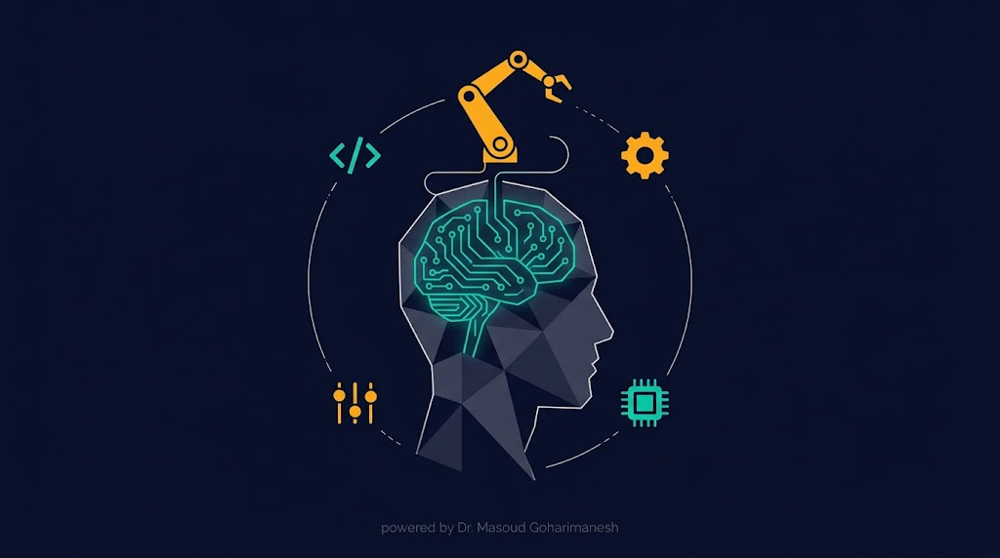
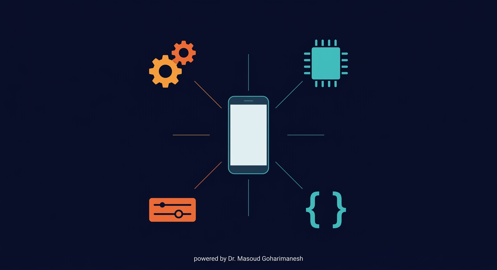
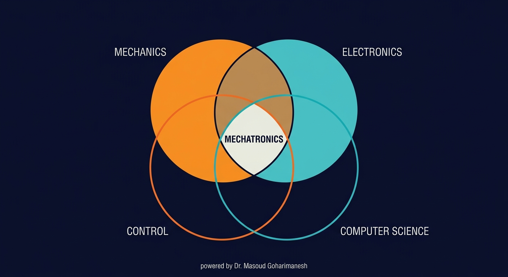
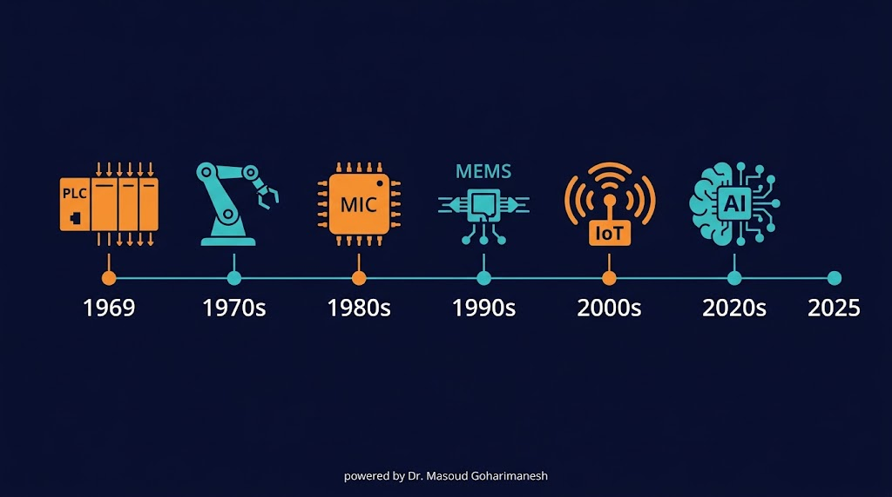
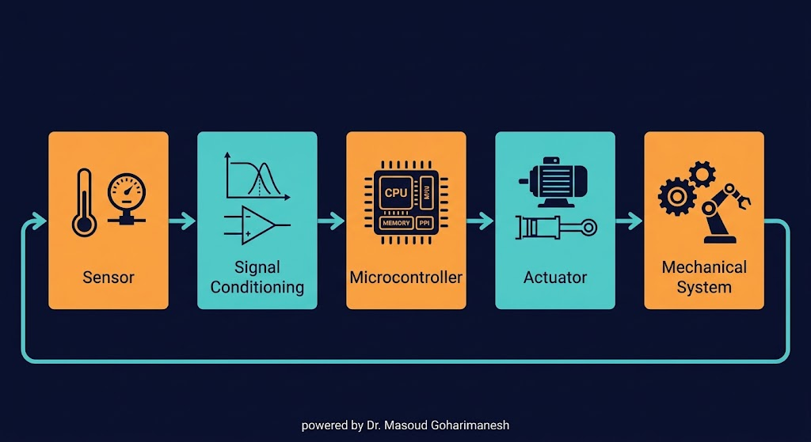
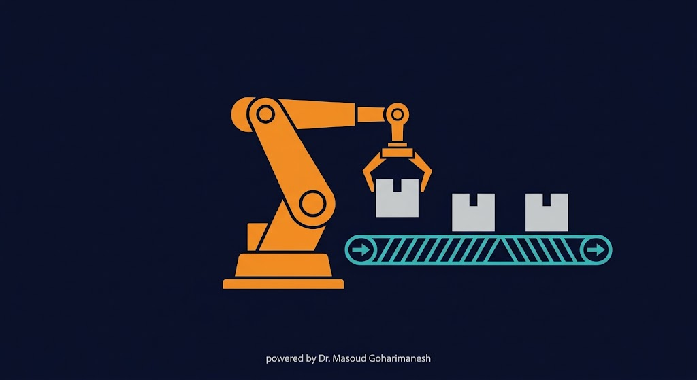
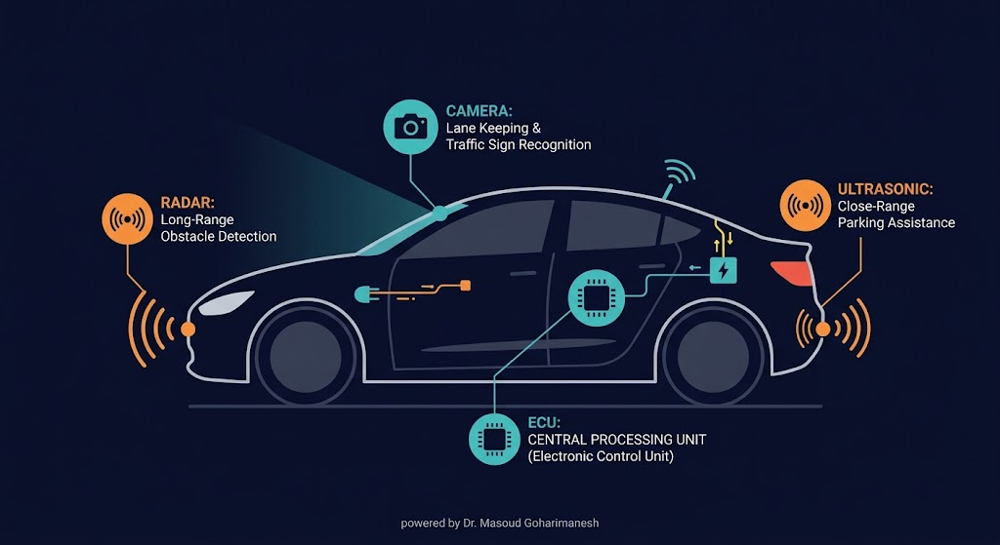
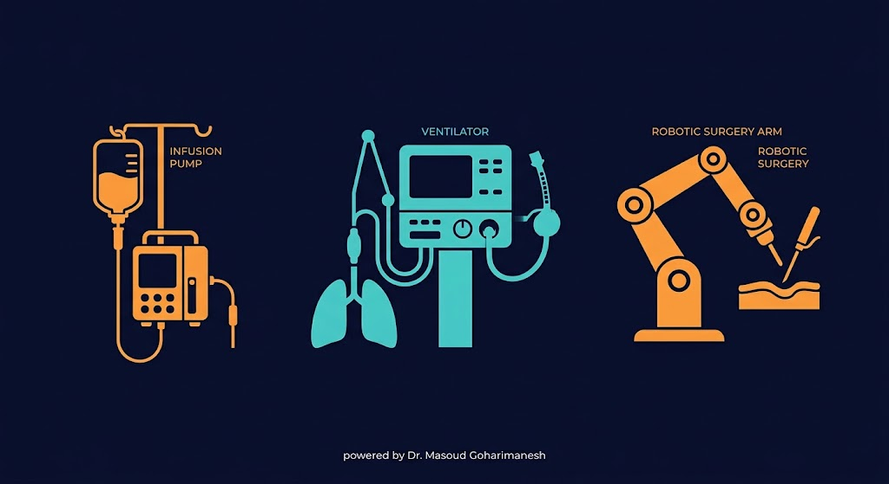
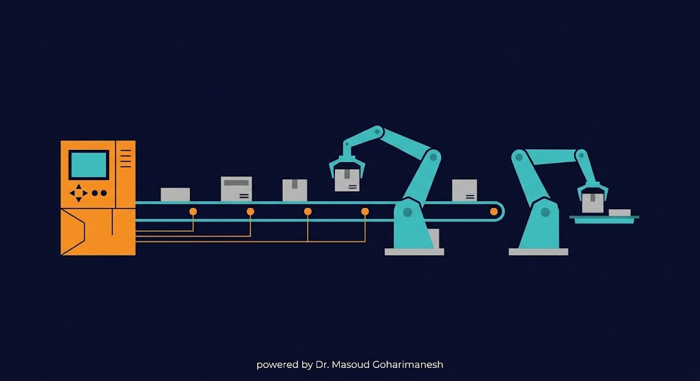
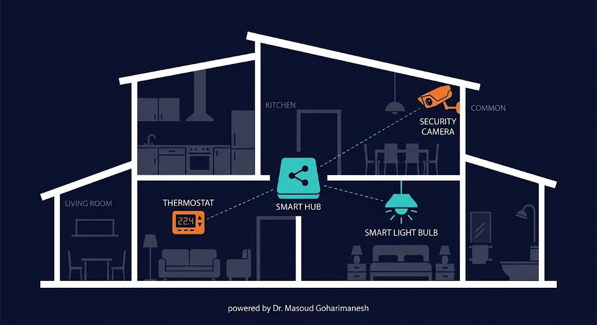

مقدمه و آشنایی با مفهوم مکاترونیک
دکتر مسعود گوهریمنش
دانشیار گروه مهندسی مکانیک
دانشگاه تربت حیدریه
جلسه ۱ از ۲۴ | بخش تئوری (۱۶ جلسه)
گوشی هوشمند شما یک سیستم مکاترونیکی کامل است!

به نظر شما، یک سیستم مکاترونیکی از چه اجزایی تشکیل شده است؟
ترکیب همافزای مکانیک، الکترونیک، کنترل و کامپیوتر

مکاترونیک یک رویکرد طراحی یکپارچه است که مکانیک، الکترونیک، کنترل و کامپیوتر را برای ایجاد سیستمهای هوشمند ترکیب میکند.
از دهه ۱۹۶۰ تا امروز

واژه «مکاترونیک» اولین بار در سال ۱۹۶۹ توسط مهندس ژاپنی، تتسورو موری، در شرکت یاسکاوا ابداع شد و بهتدریج به یک رشته مهندسی مستقل تبدیل شد.
نیاز صنعت به سیستمهای هوشمند و یکپارچه
چهار جزء اساسی + حلقه بازخورد

سیستم مکاترونیکی = سنسور + پردازنده + عملگر + کنترلر + حلقه بازخورد
رباتهای صنعتی، جراح، امدادگر

رباتهای مکاترونیکی ترکیبی از بازوهای مکانیکی، موتورهای دقیق، سنسورهای موقعیت و کنترلرهای پیشرفته هستند که در خطوط تولید، جراحی و امداد و نجات استفاده میشوند.
ABS، ESP، خودران

خودروهای مدرن با ترکیب رادار، لیدار، دوربین و هوش مصنوعی، به سیستمهای مکاترونیکی پیچیدهای تبدیل شدهاند که ایمنی و راحتی را افزایش میدهند.
دستگاه دیالیز، ونتیلاتور، پروتز هوشمند

تجهیزات پزشکی هوشمند با سنسورهای دقیق و کنترلرهای پیشرفته، جان میلیونها انسان را نجات میدهند و کیفیت زندگی را بهبود میبخشند.
خط تولید، PLC، SCADA

PLC: کنترلکننده منطقی برنامهپذیر | SCADA: سیستم کنترل و اکتساب داده
ترموستات، روشنایی، امنیت

خانههای هوشمند با یکپارچهسازی سنسورها، عملگرها و کنترلرها، آسایش، امنیت و بهرهوری انرژی را بهبود میبخشند.
یک سیستم مکاترونیکی ساده را امتحان کنید!
این شبیهساز یک سیستم کنترل دمای ساده را نشان میدهد.
جلسه اول - مقدمه و آشنایی با مفهوم مکاترونیک
نکات کلیدی جلسه اول
جلسه بعد: اصول و مبانی سیستمهای الکترومکانیکی
جلسه اول به پایان رسید
دکتر مسعود گوهریمنش
دانشیار گروه مهندسی مکانیک
دانشگاه تربت حیدریه
جلسه بعد: اصول و مبانی سیستمهای الکترومکانیکی